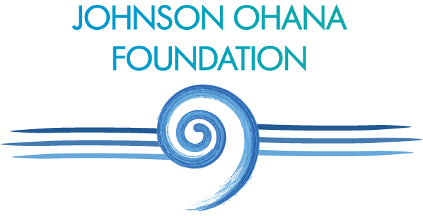

About Us
The Johnson Ohana Foundation is a non-profit public charity founded in 2008 by musician Jack Johnson, and his wife Kim, to promote positive and lasting change within communities by supporting organizations that focus on environmental, art, and music education.
Jack and Kim Johnson have been effecting change worldwide by leading the music industry in greening practices and using their success to support many social and environmental issues. In 2003 the Johnsons founded the Kokua Hawaii Foundation, a non-profit organization that supports environmental education in the schools and communities of Johnson’s native home state of Hawai’i. In 2004, Jack Johnson became the 50th member of 1% For The Planet. Johnson’s 2005 release of In Between Dreams became the first album to carry the 1% label and his 2005 world tour promoted the 1% For The Planet mission and brand and helped to launch the organization.
Jack Johnson’s 2008 tour and CD, Sleep Through the Static, set a new precedent in the music industry by taking an eco-friendly approach to all aspects of production and touring. In conjunction with the 2008 tour, Jack Johnson and crew launched All At Once, a social action network and global community based on the belief that an individual action, multiplied by millions, creates global change. All At Once connects people with local non-profits, online and at the Jack Johnson concerts, engaging individuals to make positive change using their actions, voices, and choices. 100% of Jack Johnson’s 2008 tour profits were used to support these groups and to establish the Johnson Ohana Foundation, an endowment to support environmental, art, and music education now and into the future.
Jack Johnson’s 2010-2011 To The Sea tour partnered with over 220 non-profit partners to educate fans at every concert about plastic free initiatives, sustainable local food projects, and other environmental issues. Johnson’s 2013-2014 From Here To Now To You tour continued to build momentum for All At Once and strengthen partnerships with non-profits around the world. The Johnson Ohana Foundation provided direct and matching donations to support All At Once Non-Profit Partners and continues to fund many of these organizations through aannual grantmaking program.
In addition to funding environmental initiatives, the Johnson Ohana Foundation continues to build relationships with grantees offering music and arts education for youth, primarily in Hawaii and California. Music Education grants are given to support school or community-based music programs and acquisition of musical instruments, and Arts Education grants support a variety of visual and performing arts programs. Most recently, the foundation has supported environmental art projects that integrate the main funding themes of sustainable local food and plastic free initiatives.